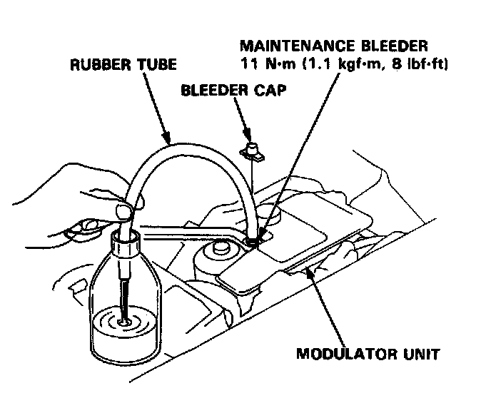
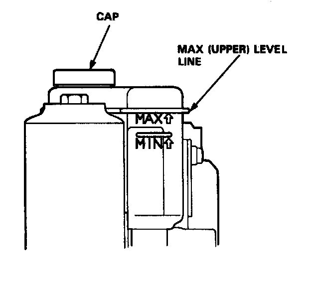

Modulator Unit Bleeding (ABS)
Modulator UnitBrake Fluid Replacement/Bleeding
CAUTION:
- Do not loosen the relief plug on the accumulator.
NOTE: Brake fluid replacement procedure explained is for the brake fluid in the modulator unit (that is, the brake fluid in the high-pressure passage and in the reservoir). Refer to brake fluid replacement procedures for the rest of the brake system. Bleeding Procedures

1. Remove the bleeder cap from the maintenance bleeder on the modulator unit.
2. Attach the wrench to the maintenance bleeder.
3. Connect a rubber tube of the appropriate diameter to the maintenance bleeder, and set the other end of the rubber tube in a suitable container.
4. While holding the rubber tube with your hand, slowly loosen the maintenance bleeder 1/8 to 1/4 to collect the brake fluid in the container.
CAUTION: Do not loosen the maintenance bleeder too much. The high-pressure brake fluid can burst out.
5. Tighten the maintenance bleeder.
NOTE: Do not remove the rubber tube and wrench yet.
6. Start the engine and let it idle for a minute. Stop the engine.
7. Check the brake fluid level in the reservoir. It should be below the MAX (upper) level line.
8. Repeat the steps 4 through 7 to drain the rest of the brake fluid from the modulator unit.
NOTE: The modulator has a capacity of approximately 150 ml (150 cc, 5 fl.oz). Approximately 40.45 ml (40-45 cc, 1.3-1.5 fl.oz) of the fluid is drained at each try.
9. Remove the cap, and refill the reservoir to the MAX (upper) level with fresh brake fluid.
NOTE: Pour the brake fluid slowly so that it does not foam, and wait for a few minutes.

10. Repeat steps 4 through 7 twice, and refill the reservoir to the MAX (upper) level with fresh brake fluid.
11. Tighten the maintenance bleeder to the specified torque, 11Nm (1.1 kgf, 8 lbf.ft).
12. After replacement, start the engine and make sure that the ABS indicator light goes off.
Bleeding:
When the brake fluid is completely drained from the reservoir (air enters in the modulator unit) during brake fluid replacement, bleed the air from the modulator unit as follows.
1. Fill the reservoir to the MAX (upper) level with fresh brake fluid.
2. Connect the rubber tube to the bleeder on the modulator unit, and set the other end of the rubber tube in a container.
3. Loosen the bleeder, and start the engine to activate the pump motor.
NOTE: Take care not to spill the brake fluid from the container.
4. Tighten the bleeder when the fluid starts to flow out of the bleeder.
5. Stop the.engine after the pump motor stops
NOTE: If the ABS indicator tight comes on and the pump motor stops, restart the engine and repeat steps 3 through 5 above.